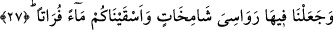

denmiştir. Anne nasıl yavrularını bağrına basıyorsa yeryüzü de ölüleri ve dirileri aynı
şekilde sinesinde barındırmaktadır. Ölüler ve diriler yeryüzünde toplandıkları için
toprak sanki onları alıp bağrına basıyormuş gibi kabul edilmiştir. Bundan dolayı böyle
bir ifâde kullanılmıştır. Yukardaki okuduğumuz âyette “ahyâen, emvâten” kelimelerinin
elif lamsız getirilmesi teklik veya çeşit ifâde etmesinden dolayı değil, o cinsin tamamını
tek tek olmasa bile cins olarak kuşatması dolayısıyladır.
Burayı şu şekilde açıklamak da mümkündür. Yeryüzü her ne kadar insanların dirilerini
ve ölülerini tümüyle bağrında barındırsa bile, canlılar ve ölüler sâdece yeryüzünde
toplanmış da değildir. Çünkü bâzı canlılar havada, başka bâzıları suda barındıklarından
yeryüzü bütün canlıları bağrında barındırmış olmaz. Tam tersine canlıların bir kısmı
yeryüzünde barınmış olur. Buna göre yukarda okuduğumuz âyetin elif-lamsız getirilmesi
mânâya uygun ve isâbetli olmuş olur. Çünkü bu durumda “ahyâen ve emvâten/canlılar ve
ölüler” bütün canlılar ve ölüler değil, bir kısım canlılar ve ölüler olmuş olur.
el-Kaffâl’den nakledildiğine göre bu âyet-i kerîme mezarı açıp ölünün kefenini çalan
hırsızın elinin kesilmesi gerektiğine delildir. Allah Teâlâ yeryüzünün “ölünün barındığı
yer” olduğunu ifâde buyurmaktadır. Şu hâlde yeryüzü ölü açısından “hırz” olmuş olur.
Fıkıhta bir kural vardır, o da şudur: Hırsızlar, “hırz/koruma altında” olan malları
çaldıklarında ellerini kesmek farz olur.
27. Yeryüzünde haşmetli dağlar yarattık, sizlere tatlı sular içirdik.
“Orada yüce” sâbit “dağlar yaratmadık mı?”
Arapçada “şâmih” yüce, yüksek anlamınadır. Buna göre âyet-i kerîmede denmiş
oluyorki, Biz orada yüce, ulu, yüksek dağlar yaratmadık mı? “Şâmih” kelimesi yüce ve
yüksek anlamına geldiği için Arapçada kibir ve gururlu anlamında burun büyüklüğü “__WORD__/şemaha” kelimesiyle ifâde edilir.
Aynu’l-maânî’de “revâsî” kelimesi, kökleri sâbit, yerin dibine doğru işlemiş,
“şâmihât” kelimesi ise dalları ve uçları göğe doğru yükselmiş, bulutlara başkaldırmış
şeklinde açıklanmaktadır.
Dikkat edileceği üzere bu âyet-i kerîmede “__WORD__ kelimesi, yâni müzekker çoğul,
müennes çoğul ile sıfatlanmıştır. Ayrıca bu “revâsî” kelimesi akıllılardan da değildir.
Ancak burada olduğu gibi müzekker çoğulun, akılsızlarda müennes çoğul ile
sıfatlanması öteden beri uygulana gelen bir uygulamadır. Sözgelimi; “eşhur ma’lumat”
ifâdesi de aynen böyledir.
“Revâsî ve şâmihât” kelimelerinin nekrâ getirilmeleri bunları yüceltmek içindir. Ya
da yeryüzünde görülen dağların, kasdedilen dağların hepsi olmadıklarına, sâdece bir
kısmı olduklarına işâret etmek, bir başka ifâdeyle “kısım” bildirmek içindir. Çünkü dağ